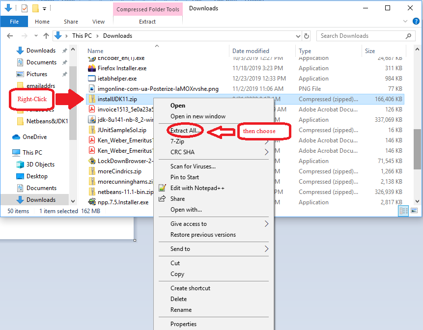
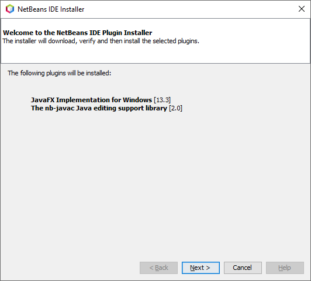
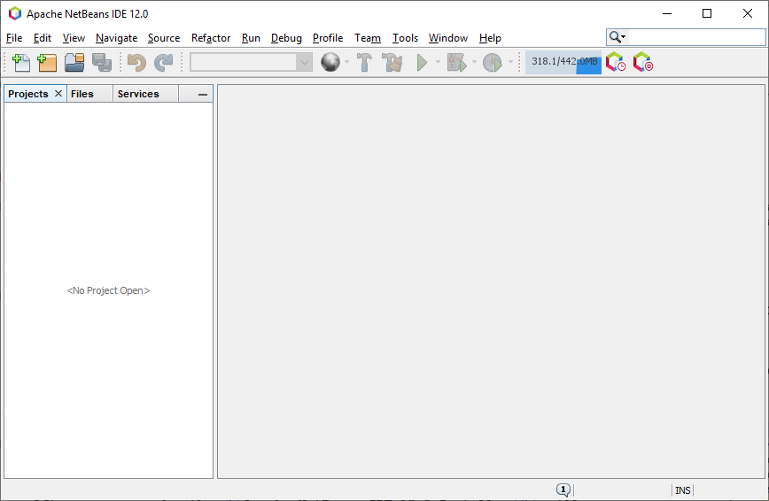

Download and Install NetBeans 12 for Windows
1) install OpenJDK11 on your computer:
- Click on this link to the file installJDK11.zip and choose "Save File..." to download the file to your computer. This may take a few moments; it is a rather large file.
- Use File Explorer to browse to the folder where the installJdk11.zip file was saved (it's most likely your Downloads folder). Right-click on the filename in File Explorer and choose "Extract All" from the pop-up window.

In the dialog that appears, make sure the checkbox is checked to show extracted files when complete, then click the Extract button. This will create a new folder named installJdk11.
- A new File Explorer window should be open showing the contents of the installJdk11 folder created in the previous step; if not, browse to that folder using File Explorer. Double-click on the file named installJDK11.bat. If a security warning appears, you can choose to proceed -- this is a safe operation. After a few seconds, the AdoptOpenJDK with Hotspot 11.0.7.10 (x64) Setup Wizard will open on your computer. Click the Next button to move to the next step.
- Check the box indicating that you accept the terms of the License Agreement, then click the Next button.
- Don't make any changes in this step; simply click the Next button.
- You will now have reached the last step in the wizard. Click Install. If prompted, say Yes to allow AdoptOpenJDK to make changes to your computer. The install process should proceed, and you will see a message that says the process has completed. Click Finish to close the Setup Wizard.
2) install Apache NetBeans 12 on your computer:
- Click on this link to the file installNetBeans12.zip and choose "Save File..." to download the file to your computer. Be patient, this file is a little larger than the last one....
- Use File Explorer to browse to the folder where the installNetBeans12.zip file was saved (it's most likely your Downloads folder). Right-click on the filename in File Explorer and choose "Extract All" from the pop-up window.
In the dialog that appears, make sure the checkbox is checked to show extracted files when complete, then click the Extract button. This will create a new folder named installNetBeans12.zip.
- A new File Explorer window should be open showing the contents of the installNetBeans12 folder created in the previous step; if not, browse to that folder using File Explorer. Double-click on the file named installNetBeans12.bat. If a security warning appears, you can choose to proceed -- this is a safe operation. If prompted, say Yes to allow Apache NetBeans to make changes to your computer. After some seconds, the Apache NetBeans IDE 12.0 Installer will open on your computer. Click the Next button to move to the next step.
- Check the box indicating that you accept the terms of the License Agreement, then click the Next button.
- You don't need to make any changes in this step; simply click the Next button.
- You will now have reached the Summary step in the wizard. Click Install. You can watch the progress of the installation on screen if you would like; it takes a little while, so be patient. When the process has completed, click Finish to close the Setup Wizard.
3) verify that Apache NetBeans will launch on your computer:
- The NetBeans installer adds Apache Netbeans IDE 12.0 to the list of apps that you can launch, and it also creates a desktop icon that you can use to start the IDE. Use either of those approaches to launch NetBeans for the first time.
- The first time you launch the program, there is some addtional set-up that needs to happen. When the Apache NetBeans IDE 12.0 window appears, a NetBeans IDE Installer dialog box will pop up on screen:

Click Next, check the box saying that you accept the terms in all of the license agreements, and click Install. When the install process has completed, click Finish.
- The NetBeans program window should look something like this:

Get Stuck?
Contact the IT Help Desk if you have any questions. On campus phone support x4357, off campus phone support 330-829-8726, or email the helpdesk at helpdesk@mountuinon.edu